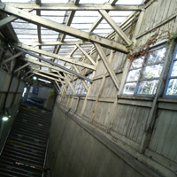
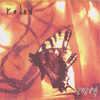
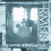
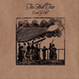
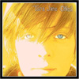
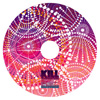
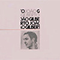
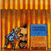

|
 |
#旗の台駅構内 (12/19) もーすぐ改装工事しちゃうみたい。もったいない。 |
| 2004.12 / 2005.2 |
 |
Rodan/Rusty (1994/Quarterstick)一曲目だけその後のRachel's/Sonora Pineみたいなチェンバーな感じですが、他の曲はジャンクと言うかグランジと言うか。ってかコレ94年かぁ・・・凄いんだけど、当時には話題になったんでしょうかね？メンバーその後の足跡としてはTara Jane O'Neil→Sonora Pine/Retsin/ソロ Kevin Coultas→Sonora Pine Jeff Mueller→June of 44/Shipping News Jason Noble→Rachel's/Shipping News ちなみにJune of 44にはHIMのDoug Scharinも在籍してます。 |
 |
Shipping News/three-fouR (2003/Quarterstick)で、コレがRODANのメンバー2人のバンド。ちょっと暗めのポストロック。このCDは過去のep3枚と新曲3曲。オルタナ(死語かな？)からちょっとずつ変化してくよーな感じが面白い。というかー何曲か70年代Pink Floydみたいな曲が有って可笑しいかも。 |
 |
Tin Hat Trio/Book of Silk (2004/Ropeadope Music)#whatwedidonourholidays*でこんな風に紹介されてたので早速amazonで買ってみました。KILLING TIMEとは思わないものの、物凄く雰囲気の有るチェンバージャズ。Die Knodelとかにも近いのかな？ココに載ってるビデオクリップ(?)とかも凄くイイ感じで。気持ちのイイ映画見終わった感じの音楽かなと思います。 あ、何曲目だか忘れたけど、ミートピアみたいな飄々とコミカルな曲も有ったり。あ、Zeena Parkinsも参加してます。 Rachel'sとかThrenody Ensembleみたいに、チェンバーロックの現代系って感じでかなり気に入りました。このCDが4枚目との事で、他のアルバムも探してみようかな？ |
 |
Tara Jane O'Neil/You Sound, Reflect (2004/Quarterstick)#で、ついでに元Rodan,Retsin,Sonora PineのTara Jane O'Neilの去年のアルバムを買ってきました。ソロとしては4枚目みたいです。もーちょいエレクトロ風味かなと思ったけど、かなりフォーキーな味わい。基本的には暗いんだけど、芯の強そうな感じです。かなり好きなタイプの歌モノ。 Slint/Bastro/Rodan/Rachel's/Sonora Pine/June of 44辺りの流れをまとめたサイトとか無いのかなぁ？最近この辺の買ってハズレ無しっすよ。 |
 |
NATSUMEN/KILL yOUR WINTER!!! (2005/BLITS-PIA RECORDS)#買ってきました。NATSUMENの初音源です。1曲目の「Newsummerboy」のみスタジオ録音。「RORO」での偏執的な編集仕事の再来と言うか、ライヴではあれだけ迸ってるのに、何だこの緻密なミックスは。 「Sonata of the Summer」はちょっとDCPRGみたいなポリリズムなジャズロック。「Natsu no Mujina」は「Akiramujina」ですね、「RORO」とは楽器編成がかなり違ってるんですけど、やっぱりイイなぁ。 友達は「Hermeto PascoalがMike Oldfieldの曲やってるみたい」とか、成る程そんな聴き方もアリか。とにかく今年3月予定のアルバムが楽しみ。楽しみ。楽しみ。 |
 |
Joao Gilberto/三月の水 (1973)Joao Gilbertoの1973年のアルバム。恥ずかしい話、ちゃんと聞いたこと無かったんですよJoao Gilberto。なんで聴こうと思ったかと言うとKILLING TIMEが最近のライヴの1曲目でこのアルバムの「Undiu」をよくやってるから。 まぁなんつーか、俺みたいな人がこのアルバムに対して付け加えて何か言うことなんて無くって。ただただ素晴らしいです。 |
 |
Egberto Gismonti/Circense (1980)Egberto Gismontiの1980年のブラジルEMIからリリースされた作品。なんでコレ欲しかったかと言うと、前に円盤でやってた松前公高+山口優+Ma*ToさんのDJで誰かがかけてたよーな記憶が有ったので（松前さんだっけな？）とりあえず一曲目の「Karate」って曲。「凄ぇ」としか言いようの無い超高速ジャズ、凄いのに何か笑えてくる。Arti+Mestieriがブルーグラスやってるような感じも。 すました感じのECMからのアルバムと較べて、アルバム全般に渡っておもちゃ箱を叩き壊したよーな世界が繰り広げられてます。 |